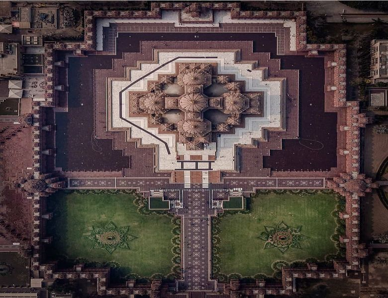

55555
5555
Swaminarayan Akshardham (New Delhi) is a Hindu temple, and a spiritual-cultural campus in New Delhi, India.Also referred to as Akshardham Temple or Delhi Akshardham, the complex displays millennia of traditional Hindu and Indian culture, spirituality, and architecture. Inspired by Yogiji Maharaj and created by Pramukh Swami Maharaj, it was constructed by BAPS.
The temple was officially opened on 6 November 2005 by Pramukh Swami Maharaj in the presence of Dr. A. P. J. Abdul Kalam, Manmohan Singh, L.K Advani and B.L Joshi.The temple, at the centre of the complex, was built according to the Vastu shastra and Pancharatra shastra.
In Swaminarayan Akshardham New Delhi, similar to its predecessor Swaminarayan Akshardham in Gandhinagar, Gujarat, the main shrine is the focal point and maintains the central position of the entire complex. There are various exhibition halls which provide information about the life and work of Swaminarayan. The designers of the complex have adopted contemporary modes of communication and technology to create the various exhibition halls.
The complex features an abhishek mandap, Sahaj Anand water show, a thematic garden and three exhibitions namely Sahajanand Darshan (Hall of Values), Neelkanth Darshan (an IMAX film on the early life of Swaminarayan as the teenage yogi, Neelkanth), and Sanskruti Darshan (cultural boat ride). According to Swaminarayan Hinduism, the word Akshardham means the abode of Swaminarayan and believed by followers as a temporal home of God on earth.
Where Is Akshardham?
Swaminarayan Akshardham in New Delhi epitomizes 10,000 years of Indian culture in all its breathtaking grandeur, beauty, wisdom an d bliss. It brilliantly showcases the essence of India’s ancient architecture, traditions and timeless spiritual messages. The Akshardham experience is an enlightening journey through India’s glorious art, values and contributions for the progress, happiness and harmony of mankind.
The Swaminarayan Akshardham complex was built in only five years through the blessings of HDH Pramukh Swami Maharaj of the Bochasanwasi Shri Akshar Purushottam Swaminarayan Sanstha (BAPS) and the colossal devotional efforts of 11,000 artisans and thousands of BAPS volunteers. Heralded by the Guinness World Record as the World’s Largest Comprehensive Hindu Temple, the complex was inaugurated on 6 November, 2005.
Akshardham Design?
The building had been planned since 1968 as a vision of Yogiji Maharaj. Yogiji Maharaj, the spiritual head of the BAPS Swaminarayan Sanstha at the time, expressed his desire for wanting a grand temple built on the banks of the Yamuna river to two or three devotee families of Swaminarayan that resided in New Delhi at the time.Attempts were made to start the project, however little progress was made. In 1971, Yogiji Maharaj died.
In 1982, Pramukh Swami Maharaj, Yogiji Maharaj's successor as the spiritual head of BAPS, started to continue fulfilling the dream of his guru Yogiji Maharaj and prompted devotees to look into the possibility of building the temple in Delhi. A request for the plan was put forward to the Delhi Development Authority (DDA), and several different places were suggested, including Ghaziabad, Gurgaon, and Faridabad. Pramukh Swami Maharaj stood firm in following the wishes of Yogiji Maharaj to build a temple on the Yamuna.
In April 2000, after 18 years, the Delhi Development Authority offered 60 acres (240,000 m2) of land, and the Uttar Pradesh Government offered 30 acres (120,000 m2) for the project.Upon receiving the land, Pramukh Swami Maharaj performed puja on the site for success in the project. Construction on the temple began on 8 November 2000 and Akshardham was officially opened on 6 November 2005, with the building being completed in two days short of five years.
Development
A team of eight swamis were assigned to oversee the Akshardham project.The majority of the team had gained experience from work on the Akshardham in Gandhinagar, Gujarat, Delhi Akshardham's sister complex During development, Pramukh Swami Maharaj was consulted in many aspects of the monument's construction. Construction on the Akshardham complex
Around 1997 and 1998, the idea to start development on the temple, by beginning the stone carving, had been requested. However, Pramukh Swami Maharaj asserted that the construction should only start after the land was acquired. The initial work done on the site was on the foundation. Initially, the site wasn't considered ideal for construction. As a result, a deep foundation was imperative. To construct a stable foundation, 15-foot (4.6 m) of rocks and sand were entwined with wire mesh and topped by five feet of concrete. Five million fired bricks raised the foundation another 21.5-foot (6.6 m). These bricks were then topped by three more feet of concrete to form the main support under the monument.
On 2 July 2001, the first sculpted stone was laid.The team of eight swamis consisted of scholars in the field of the Pancharatra Shastra, a Hindu scripture on architecture and deity carving. The swamis watched over stonework as well as the research on carvings on Indian craftsmanship from between the eighth and twelfth centuries. This research was done at various sites such as Angkor Wat, as well as Jodhpur, Jagannath Puri, Konark & temples of Bhubaneswar of Odisha and other temples in South India.
Seven thousand carvers and three thousand volunteers were put to work for the construction Akshardham.With over 6,000 tons of pink sandstone coming from Rajasthan, workshop sites were set up around places within the state.Amongst the carvers were local farmers and fifteen hundred tribal women who had suffered from a drought and received economic gain due to this work. The initial stone cutting was done by machine, while the detailed carvings were done by hand. Every night, over one hundred trucks were sent to Akshardham, where four thousand workers and volunteers operated on the construction site.
Akshardham Today ?
'Akshardham' means the divine abode of God. It is hailed as an eternal place of devotion, purity and peace. Swaminarayan Akshardham at New Delhi is a Mandir – an abode of God, a Hindu house of worship, and a spiritual and cultural campus dedicated to devotion, learning and harmony. Timeless Hindu spiritual messages, vibrant devotional traditions and ancient architecture all are echoed in its art and architecture.The mandir is a humble tribute to Bhagwan Swaminarayan (1781- 1830), the avatars, devas and great sages of Hinduism. The traditionally-styled complex was inaugurated on 6 November 2005 with the blessings of HH Pramukh Swami Maharaj and through the devoted efforts of skilled artisans and volunteers.
Sources
wikipedia
Author:--- wikipedia Editors
URL :--- https://www.history.com/topics/landmarks/angkor-wat